raid-shard-market-04d04a-20261122-0931 · playable /home/user/simula-playable-simula-agent/games/samples/raid-shard-market.html · 2026-11-22 10:25 UTC| cut | video | score | gate | H | J | judge |
|---|---|---|---|---|---|---|
| a hook-first |
78.5 | ✓ | 79.7 dead air 29% · action 0.352 · hook 1.27 moments 0.852 · arc 0.631 · 7 shots ✓ core loop · ✓ feature · ✓ progression |
77.5 loop 9 · features 7 human 8 · action 7 hook 7 · polish 7.5 · run 8 |
This highlight clearly demonstrates the core arcade-idle loop of mining shards, stocking the market, collecting gold, and hiring workers. The pacing is brisk with natural joystick movement, making it a strong, runnable ad creative. worst @11s: The jump cut between collecting gold and walking to the worker pad is slightly abrupt. | |
| b learn-then-escalate |
79.2 | ✓ | 78.5 dead air 33% · action 0.34 · hook 0.873 moments 0.89 · arc 0.85 · 7 shots ✓ core loop · ✓ feature · ✓ progression |
79.8 loop 9 · features 8 human 8 · action 8 hook 6.5 · polish 7.5 · run 8 |
This highlight clearly demonstrates the core arcade-idle loop of mining shards, stocking the market, collecting gold, and hiring workers. The pacing is tight with clean cuts and natural-looking joystick movement, making it a strong, runnable ad. worst @1s: Slow start with the tutorial banner before the resource-gathering action really picks up. | |
| c ★ feature-montage |
79.7 | ✓ | 77.5 dead air 26% · action 0.359 · hook 0.82 moments 0.878 · arc 0.572 · 9 shots ✓ core loop · ✓ feature · ✓ progression |
81.5 loop 9 · features 8.5 human 8 · action 8 hook 7 · polish 8 · run 8 |
This highlight clearly demonstrates the core arcade-idle loop of mining shards, stocking the market, and hiring workers with natural human-like movement. The pacing is brisk with clean cuts, culminating in a satisfyingly huge stack of shards that makes it a strong ad candidate. worst @0s: Opens with a relatively slow walk and tutorial prompt instead of jumping straight into high-stacking action. | |
| base_first baseline: first 20 s |
53.3 | ✓ | 67.3 dead air 37% · action 0.307 · hook 1.013 moments 0.727 · arc 0.85 · 2 shots ✓ core loop · ✗ feature · ✓ progression |
41.8 loop 5.5 · features 3.5 human 6.5 · action 3 hook 2 · polish 5 · run 3 |
This clip is too slow and static, spending the first four seconds on a tutorial prompt and only showing the most basic shard collection and deposit. It misses the exciting arcade-idle progression like hiring workers, upgrading the mine, and collecting piles of gold. worst @0s: The first 4 seconds are completely static with a tutorial prompt, offering no hook. | |
| base_random baseline: random clips |
60.4 | ✓ | 70.5 dead air 29% · action 0.349 · hook 0.904 moments 0.726 · arc 0.85 · 6 shots ✓ core loop · ✗ feature · ✓ progression |
52.2 loop 5 · features 6 human 7.5 · action 4 hook 3 · polish 7 · run 4 |
The highlight shows the market bin, gold collection, and upgrade pads, but completely misses the satisfying mechanic of mining and hauling a towering stack of shards. Combined with a static 3-second tutorial intro and slow pacing, it lacks the action needed for a strong ad. worst @0s: The first 3 seconds are a static tutorial screen with a pointing hand and zero movement. |
The first-time player successfully follows the initial shard-gathering loop, but struggles with off-screen tutorial targets, ambiguous upgrade pad icons, and a lack of clear goals once free-roam gameplay begins. Additionally, the playable runs for over 90 seconds without ever presenting an end card or CTA.
| time | type | severity | issue | suggested fix | evidence | signals |
|---|---|---|---|---|---|---|
| 0:40.2–1:28.7 | unclear_goal | high | Post-tutorial upgrade pads and objectives are ambiguous From t=40.2s to 88.7s, clarity drops to 23%–48% as the player navigates between the 40 (pickaxe), 50 (crystal), and 1,500 (tower) pads while a yellow arrow points to the crystal pile. The player steps on pads without clear feedback on whether they can afford them or what the overarching goal is. | Add a persistent top HUD showing current gold, a clear objective tracker (e.g., 'Hire 2 Workers' or 'Unlock the Tower: 49/1500'), and color-code upgrade pad costs (red when unaffordable, green/pulsing when affordable). | 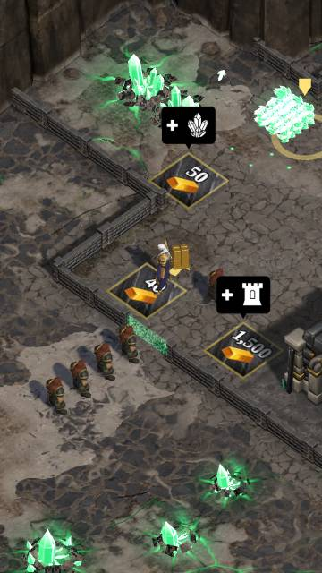 | S4, S5, S6, S7, S8, S9, S10, S11, S12, S13, S14, S15, S16, S17, S18 |
| 1:31.8 | pacing | high | No end card or CTA within 92 seconds of play The session ran for 91.8s and ended by time_limit without ever triggering an end card or install prompt. | Trigger the end card with a clear 'Play Now' CTA after a key milestone—such as hiring the second worker or upgrading the mine (around 45–60s)—rather than waiting for the 1,500-gold tower. | S20 | |
| 0:22.8–0:34.2 | confusion | medium | Tutorial hand points off-screen toward hidden upgrade pad At t=22.8s, the player is at the golden carpet with 46 gold and the tutorial hand points left-downward into empty courtyard space. The player has to walk around the stone building until t=34.2s before the '10' pickaxe pad becomes visible. | Place an on-screen edge indicator or briefly pan the camera to the '10' pickaxe pad when it becomes the active tutorial step so the player sees their destination immediately. | 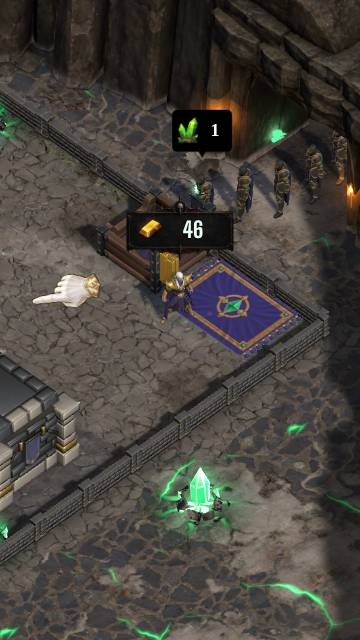 | S2, S3 |
| 0:00.5–0:04.5 | ui | medium | Initial tap input fails to move character or clarify drag control At t=0.5s–1.6s, the tutorial hand points to a yellow circle without showing a drag motion, and at t=4.5s the player's input has no visible effect while 'DRAG TO MOVE' is displayed. | Animate the tutorial hand performing a clear drag gesture with a visible virtual joystick ring, and show a subtle joystick indicator on any tap so players immediately understand they need to hold and drag. | 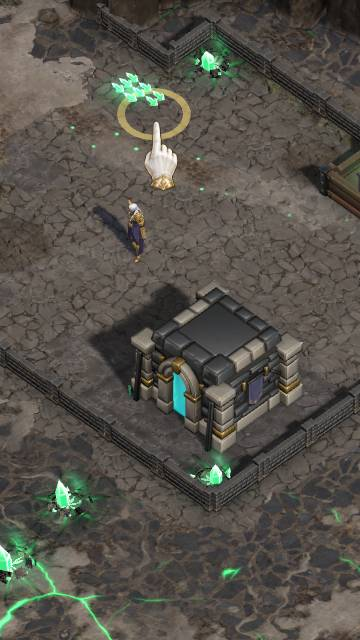 | S1, S19 |
| time | saw | phase | planner | actions (with human reaction time) | notes | cost |
|---|---|---|---|---|---|---|
| 0:01.6 turn 1 | tutorial decider: tutorial 89% clarity 79% |
sees: Isometric dungeon/courtyard with character, building, green crystals, and tutorial hand pointing at a yellow circle progress: First turn, following tutorial prompt |
0:03.1 tap tap the yellow circle as shown by tutorial hand (+1643 ms) | Tutorial hand points to yellow circle at [175, 430]. Looks like tap-to-move. | 2.4s $0.0045 | |
| 0:04.5 turn 2 | 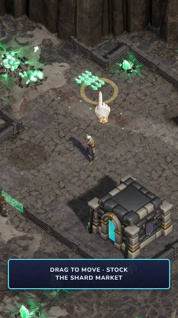 |
tutorial decider: tutorial 96% clarity 85% last input worked: 30% |
sees: Tutorial: DRAG TO MOVE · STOCK THE SHARD MARKET, green arrows point up-left to green shards progress: Tapping moved slightly or showed drag instruction |
0:05.9 drag drag up-left to move character toward the green shards (+1435 ms) | Controls: DRAG TO MOVE (virtual joystick). Goal: collect green shards and stock the shard market. | 2.8s $0.0056 |
| 0:08.6 turn 3 | 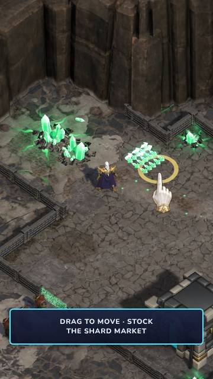 |
tutorial decider: tutorial 94% clarity 84% last input worked: 96% |
sees: Character near green shards, tutorial hand pointing to yellow circle on the right progress: Character moved toward shards; now tutorial points to yellow circle on the right |
0:09.8 drag drag right-up to move character into the yellow circle and collect shards (+1257 ms) | Controls: DRAG TO MOVE (virtual joystick). Goal: collect green shards and stock the shard market. | 2.8s $0.0054 |
| 0:11.9 turn 4 | 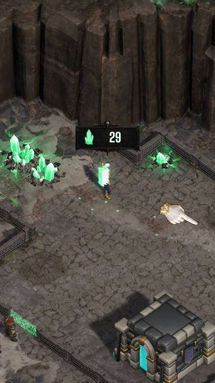 |
tutorial decider: tutorial 71% clarity 68% last input worked: 95% |
sees: Character carrying 29 green shards; tutorial hand pointing down-right along dotted path progress: Collected 29 shards, now prompted to move down-right |
0:13.2 drag drag down-right to move character along the path (+1325 ms) | Controls: DRAG TO MOVE (virtual joystick). Goal: collect green shards (have 29) and bring them down-right to the building. | 2.9s $0.0052 |
| 0:15.4 turn 5 | 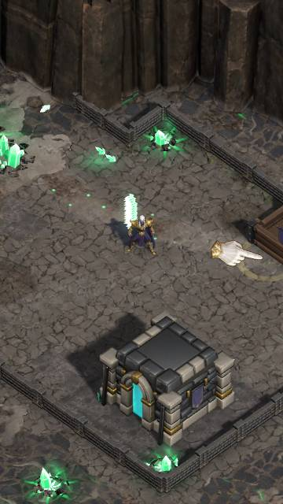 |
tutorial decider: tutorial 69% clarity 60% last input worked: 62% |
sees: gameplay, character carrying green shards, hand pointing to yellow circle on the right progress: moved along the path, now hand points to the drop-off/build spot on the right |
0:16.3 drag drag right-down to move character to the yellow circle (+1006 ms) | Controls: DRAG TO MOVE (virtual joystick). Goal: collect green shards and bring them to the yellow circle pointed by the hand. | 3.4s $0.0052 |
| 0:19.1 turn 6 | 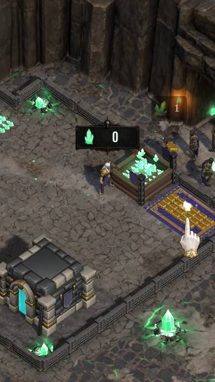 |
tutorial decider: tutorial 78% clarity 56% last input worked: 56% |
sees: gameplay, character next to shard bin, tutorial hand pointing to golden carpet progress: moved near the shard bin, hand now points to the golden area |
0:20.4 drag drag down-right to move character onto the golden carpet (+1370 ms) | Controls: DRAG TO MOVE (virtual joystick). Goal: follow tutorial hand, now pointing to golden carpet area. | 2.8s $0.0052 |
| 0:22.8 turn 7 | tutorial decider: tutorial 68% clarity 37% last input worked: 69% |
sees: Character is at the golden carpet; tutorial hand points left-downward. progress: Reached the golden carpet and deposited/got 46 gold. |
0:24.1 drag drag left-down to follow the tutorial hand (+1449 ms) | Controls: DRAG TO MOVE. Goal: follow tutorial hand, now pointing left-down. | 2.6s $0.0051 | |
| 0:26.1 turn 8 | 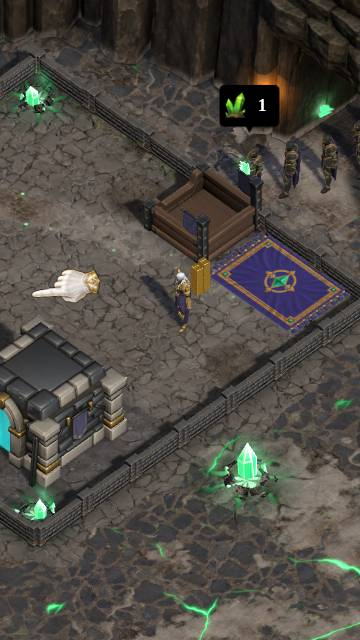 |
tutorial decider: tutorial 57% clarity 51% last input worked: 72% |
sees: Character in dungeon courtyard, tutorial hand pointing left-down toward portal building progress: Moved left-down, hand still pointing left-down |
0:27.9 drag drag left-down to follow the tutorial hand (+1841 ms) | Controls: DRAG TO MOVE. Goal: follow tutorial hand toward the left-down portal building. | 2.6s $0.0048 |
| 0:30.2 turn 9 | 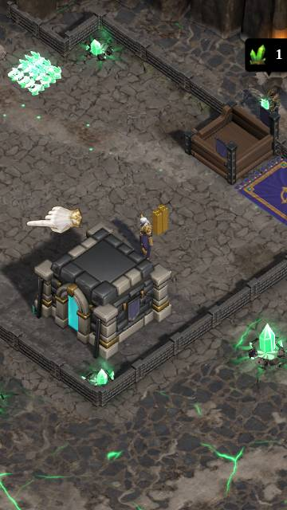 |
tutorial decider: tutorial 71% clarity 51% last input worked: 75% |
sees: Character near portal building, tutorial hand pointing left progress: Moved closer to the portal building |
0:31.7 drag drag left-up to go around the building toward the tutorial hand (+1521 ms) | Controls: DRAG TO MOVE. Goal: follow tutorial hand toward the left side of the portal building. | 2.9s $0.0051 |
| 0:34.2 turn 10 | 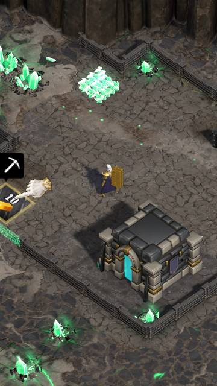 |
tutorial decider: tutorial 65% clarity 50% last input worked: 72% |
sees: Character above the building, tutorial hand pointing at a pickaxe '10' pad on the left progress: Moved around the building and can now see the target pad |
0:35.5 drag drag left-down to move character onto the pickaxe '10' pad (+1433 ms) | Controls: DRAG TO MOVE. Goal: step onto the pickaxe '10' pad on the left to spend gold. | 4.8s $0.0057 |
| 0:38.0 turn 11 | 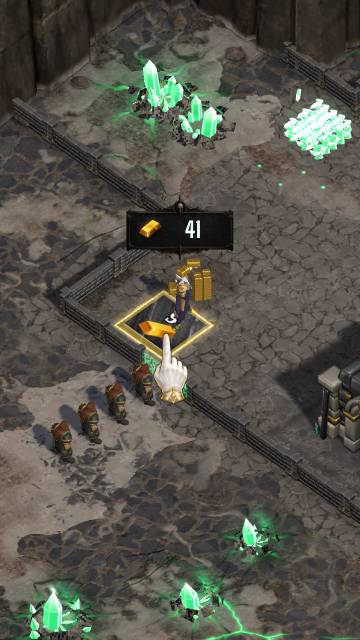 |
tutorial decider: tutorial 60% clarity 51% last input worked: 70% |
sees: character standing on the pad spending gold (5 left, 41 gold) progress: character reached the pad and is spending gold |
0:37.9 wait wait for gold to finish spending on the pad | Controls: DRAG TO MOVE. Standing on the pad spends gold to unlock/hire miners. | 3.0s $0.0047 |
| 0:40.2 turn 12 | gameplay decider: gameplay 47% clarity 35% last input worked: 58% |
sees: Character standing on 40 pad with gold on back, yellow arrow points to glowing crystal pile at top-right progress: Waited on pad, 40 pad still there |
0:40.6 drag drag up-right toward the yellow-arrow crystal pile (+504 ms) | Controls: DRAG TO MOVE. Standing on pads spends gold. Yellow arrow points to glowing crystal pile at top-right. | 3.6s $0.0069 | |
| 0:42.8 turn 13 | 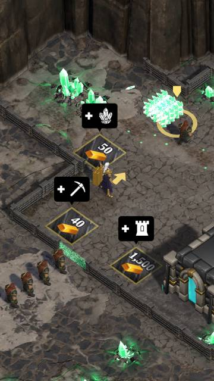 |
gameplay decider: gameplay 68% clarity 31% last input worked: 45% |
sees: Character in mine area, yellow arrow pointing up-right to glowing crystal pile progress: Moved up-right toward the crystal pile. |
0:44.2 drag drag up-right to reach the glowing crystal pile (+1393 ms) | Controls: DRAG TO MOVE. Standing on pads spends gold. Yellow arrow points to glowing crystal pile at top-right. | 2.9s $0.0052 |
| 0:46.6 turn 14 | 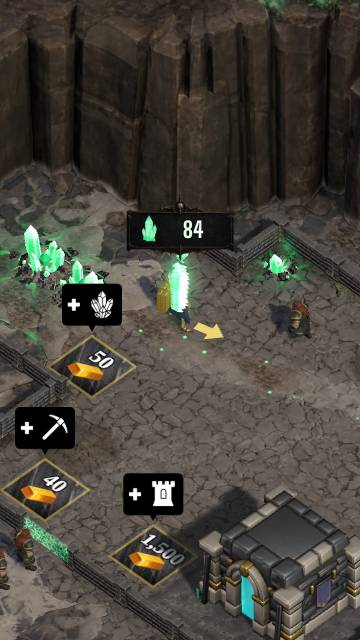 |
gameplay decider: gameplay 65% clarity 45% last input worked: 75% |
sees: Character carrying crystals, yellow arrow points down-right progress: Picked up crystals from the pile, now arrow points down-right |
0:47.8 drag follow the yellow arrow down-right (+1278 ms) | Controls: DRAG TO MOVE. Standing on pads spends gold. Picked up crystals, following yellow arrow down-right. | 2.8s $0.0051 |
| 0:50.3 turn 15 | 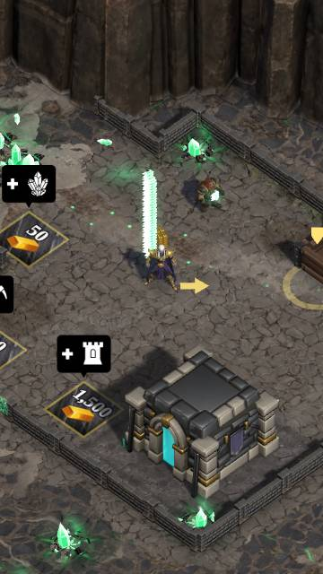 |
gameplay decider: gameplay 64% clarity 30% last input worked: 61% |
sees: Character carrying tall stack of crystals, yellow arrow pointing right to a drop-off circle progress: Moved closer to the drop-off zone on the right |
0:51.7 drag move right into the yellow drop-off circle (+1480 ms) | Controls: DRAG TO MOVE. Standing on pads spends gold. Carrying crystals to the yellow circle on the right. | 2.7s $0.0049 |
| 0:54.4 turn 16 | 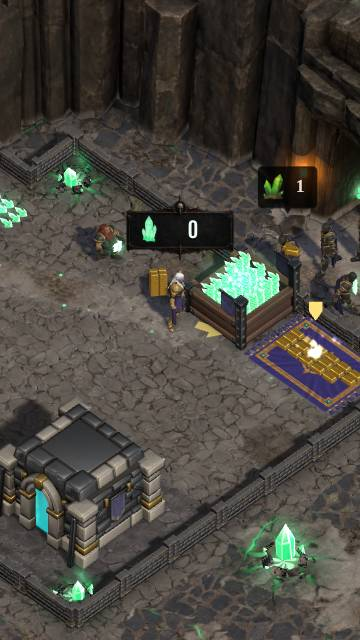 |
gameplay decider: gameplay 68% clarity 43% last input worked: 70% |
sees: Character next to crystal bin, yellow arrow pointing at gold bars on blue carpet progress: Dropped off crystals, now gold bars appeared on the carpet |
0:55.5 drag move down-right onto the blue carpet with gold bars (+1174 ms) | Controls: DRAG TO MOVE. Dropped off crystals at bin, now collecting gold from the blue carpet. | 2.8s $0.0053 |
| 0:57.5 turn 17 | 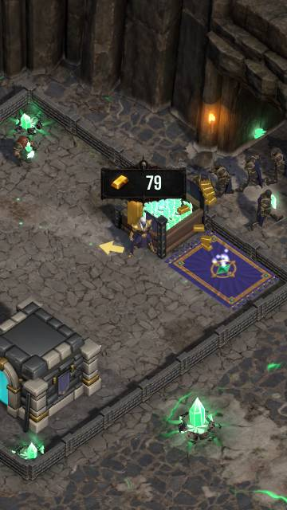 |
gameplay decider: gameplay 74% clarity 23% last input worked: 61% |
sees: Character near bin with 79 gold, yellow arrow pointing down-left progress: Collected gold (79). Now a yellow arrow points down-left. |
0:58.4 drag follow the yellow arrow down-left (+923 ms) | Controls: DRAG TO MOVE. Collected 79 gold. Following yellow arrow down-left. | 2.4s $0.0047 |
| 1:00.5 turn 18 | 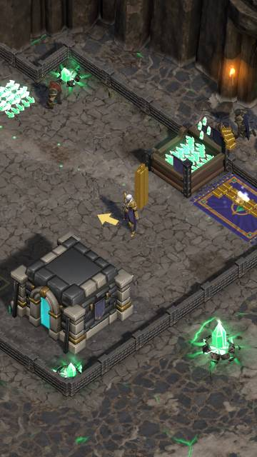 |
gameplay decider: gameplay 57% clarity 37% last input worked: 68% |
sees: Character carrying gold bars, yellow arrow pointing down-left toward a stone building with a cyan doorway progress: Moved down-left, carrying gold bars, yellow arrow still points down-left |
1:02.0 drag follow the yellow arrow down-left toward the stone building (+1586 ms) | Controls: DRAG TO MOVE. Carrying gold bars. Following yellow arrow down-left toward the stone building. | 2.6s $0.0048 |
| 1:04.9 turn 19 | 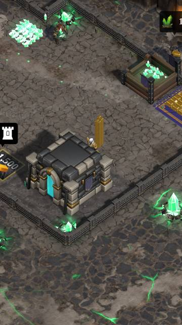 |
gameplay decider: gameplay 48% clarity 36% last input worked: 65% |
sees: Character behind stone building with gold bars; tower pad (1,500) visible on the left progress: Moved closer to the stone building; tower build pad is now visible on the left |
1:05.8 drag walk around the stone building toward the tower pad on the left (+977 ms) | Controls: DRAG TO MOVE. Carrying gold bars. Going around the stone building to reach the 1,500 gold tower pad on the left. | 4.1s $0.0062 |
| 1:08.7 turn 20 | 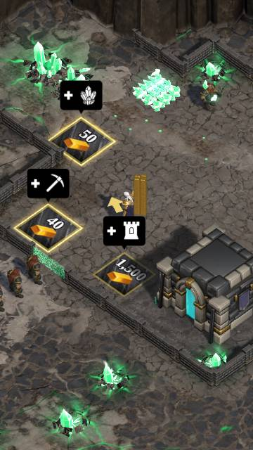 |
gameplay decider: gameplay 65% clarity 48% last input worked: 80% |
sees: Character carrying gold bars near three upgrade pads (40, 50, 1500), yellow arrow pointing up-left progress: Walked around stone building to the upgrade pads area |
1:09.6 drag follow the yellow arrow up-left toward the upgrade pads (+911 ms) | Controls: DRAG TO MOVE. Carrying gold bars. Yellow arrow points up-left toward 40 (pickaxe) and 50 (crystal) pads. | 3.8s $0.0067 |
| 1:11.7 turn 21 | 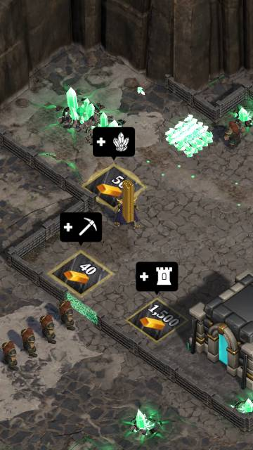 |
gameplay decider: gameplay 71% clarity 36% last input worked: 58% |
sees: Character standing right below the 50 crystal upgrade pad, carrying gold bars; 40 pickaxe pad is down-left progress: Moved up-left right next to the 50 crystal pad |
1:12.9 drag step onto the 50 crystal upgrade pad (+1274 ms) | Controls: DRAG TO MOVE. Carrying gold bars. Next to 50 (crystal) and 40 (pickaxe) upgrade pads. | 2.9s $0.0054 |
| 1:14.6 turn 22 | 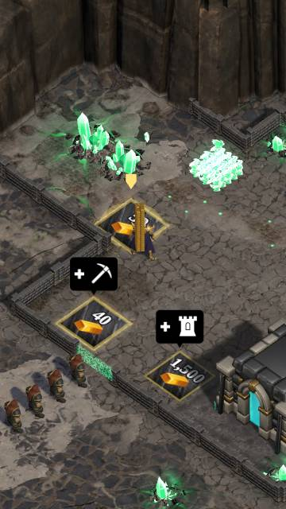 |
gameplay decider: gameplay 82% clarity 34% last input worked: 52% |
sees: Character standing on the 50 crystal upgrade pad with gold bars, 40 pickaxe pad below-left progress: Stepped onto the 50 upgrade pad |
1:14.6 wait let gold bars deposit into the 50 upgrade pad 1:15.8 drag move down-left onto the 40 pickaxe upgrade pad (+412 ms) |
Controls: DRAG TO MOVE. Standing on 50 upgrade pad, 40 pickaxe pad is down-left. | 2.9s $0.0057 |
| 1:17.6 turn 23 | 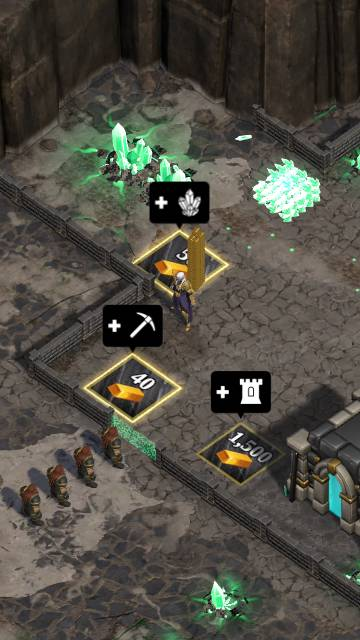 |
gameplay decider: gameplay 68% clarity 32% last input worked: 49% |
sees: Player near 50 crystal pad with gold stack, 40 pickaxe pad down-left progress: Moved slightly down-left from 50 pad |
1:18.5 drag step onto the 40 pickaxe upgrade pad (+940 ms) 1:19.5 wait let gold bars deposit into the 40 pad |
Controls: DRAG TO MOVE. Carrying gold bars, moving onto 40 pickaxe upgrade pad. | 2.8s $0.0052 |
| 1:21.7 turn 24 | 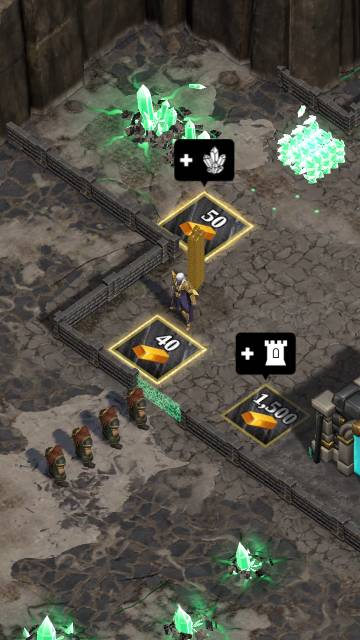 |
gameplay decider: gameplay 82% clarity 28% last input worked: 34% |
sees: Character near 40 and 50 gold upgrade pads progress: Moved near the 40 pad, still holding gold |
1:22.9 drag step onto the 40 upgrade pad (+1253 ms) 1:23.8 wait let gold bars deposit |
Controls: DRAG TO MOVE. Carrying gold bars, stepping onto 40 pad. | 3.1s $0.0055 |
| 1:25.6 turn 25 | 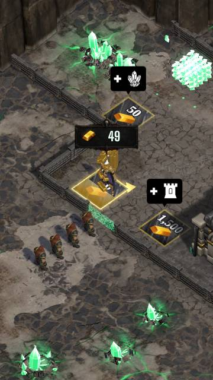 |
gameplay decider: gameplay 67% clarity 25% last input worked: 89% |
sees: Character standing on gold pad with 49 gold bars; 50 crystal pad just above progress: Deposited gold bars |
1:26.8 drag move up-right onto the 50 crystal upgrade pad (+1198 ms) | Controls: DRAG TO MOVE. Carrying 49 gold bars. Stepping onto 50 crystal pad. | 2.9s $0.0055 |
| 1:28.7 turn 26 | 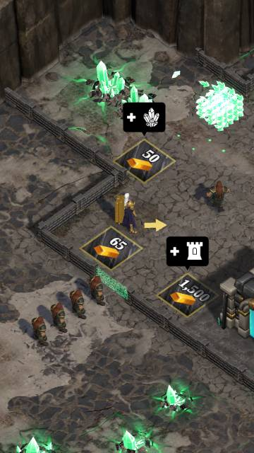 |
gameplay decider: gameplay 62% clarity 29% last input worked: 50% |
sees: Character near 50 crystal pad and 65 pad progress: Moved near the 50 crystal pad |
1:29.8 drag step onto the 50 crystal pad (+1225 ms) | Controls: DRAG TO MOVE. Stepping onto 50 crystal pad. | 2.5s $0.0051 |
Files: raw.mp4 · highlight.mp4 · candidates/ · moments.json · game_model.json · edl_*.json · eval.json · friction.json/.md · plans.jsonl · actions.jsonl · observations.jsonl · decisions in plans.jsonl · ledger.jsonl · trace.jsonl · obs/